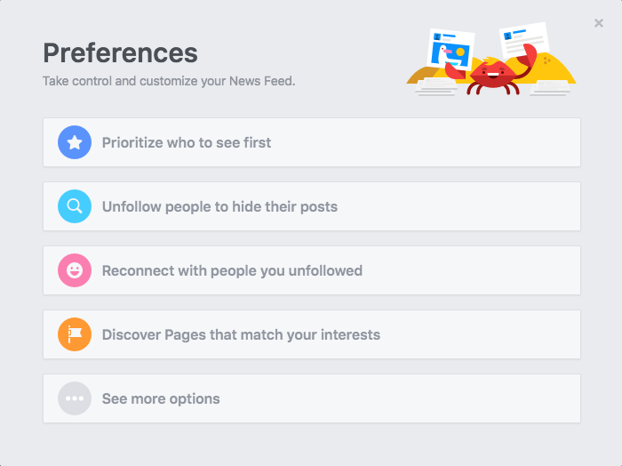

Users should fact check information before posting on social media. This includes:
1. Read beyond the headline: Even in legitimate news stories, the headline does not tell the whole story.
2. Check the author: Authors are not always reliable and can even be fake.
3. Check the date: Some stories distort real events. Authors can twist what stories say or claim that something that happened a long ago is relevant to current events.
4. Check your biases: confirmation biases lead people to stock in information that confirms their beliefs and discount information that doesn’t.
Users should look for the sources:
Stories are more reliable if they have multiple sources of confirmation. Single source might not always be fake but you cannot assume they are true until there is confirmation.
Users should consider the story’s agenda:
Many news tailor their content to particular groups of customers and are more likely to cover stories with a particular perspective. Political organizations will most likely want to persuade, so watch for emotional appeals, arguments, or any other measure designed to make you fearful or anxious.
Users should view stories that play to emotions with caution:
Some stories might generate strong feelings towards certain topics, it does not make it false. However, scammers and propagandists know the power of emotion and will try to use it in their favor. Therefore, fact check before posting it.
